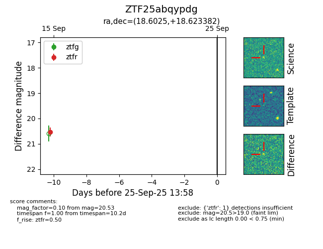

FINK: ZTF25abqypdg
Lasair: ZTF25abqypdg
ALeRCE: ZTF25abqypdg
ZTF25abqypdg (ztf,fink)
equatorial (ra, dec) = (18.6025,+18.62338)
galactic (l, b) = (130.4956,-43.91073)

last ztfr=20.53
1 ztfr detections